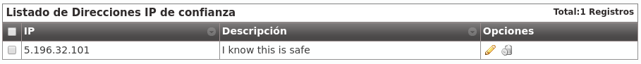

Elementos de seguridad¶
Cortafuegos¶
IvozProvider actualmente no viene con un cortafuegos configurado pero...
Peligro
Recomendamos encarecidamente que las instalaciones en producción cuenten con un cortafuegos que protejan la plataforma del salvaje Internet.
Los metodos de protección podrían ser:
Cortafuegos locales basados en iptables
Cortafuegos externos
Ambos
Servicios/Puertos expuestos¶
Estos son los puertos que IvozProvider necesita exponer para funcionar correctamente:
Señalizacion SIP:
Puerto 5060 (TCP/UDP)
Puerto 5061 (TCP)
Puerto 7060 (TCP/UDP) y 7061 TCP (para casos en que ambos proxies compartan la misma dirección IP)
Flujo de audio RTP:
Rango de puertos 13000-19000 UDP
Portal web y provisión:
Puertos TCP 443, 1443 y 2443
Consejo
Recomendamos emplear el módulo GeoIP de iptales para rechazar tráfico de paises en los que no se tenga ningun usuario.
Rangos de IP autorizados por empresa¶
En el proceso de creación de empresas nos saltamos deliberademente un mecanismo de seguridad que limita las direcciones IP o rangos de red que pueden utilizar las credenciales de los terminales de una empresa concreta.
Se puede activar en la sección Configuración de Marca > Empresas:

Todo usuario que quiera conectarse desde una red no incluida no podrá, a pesar de disponer de unas credenciales válidas.
Advertencia
Una vez activado el filtrado, es obligatorio añadir redes o direcciones válidas o, por el contrario, todas las llamadas se rechazarán:

Se pueden añadir direcciones IP y rangos de direcciones, en formato CIDR (IP/mask)

Importante
Este mecanismo limita los orígenes de los usuarios de una empresa, no filtra en absoluto los orígenes de los Contratos de Peering.
Usuarios remotos¶
Algunos usuarios de ciertas empresas viajan con mucha frecuencia y necesitan llamar desde redes externas no controladas. Estos usuarios obligan a la empresa a desactivar el mecanismo de protección de IP.
Para solventar este problema, en la sección de Usuarios existe la opción Llamadas desde IPs no autorizadas que permite que ciertos usuarios llamen desde redes no permitidas mientras su empresa sigue protegida con el mecanismo de protección de IP.
Para evitar que estos usuarios signifiquen una brecha de seguridad, el número de llamadas que pueden hacer desde redes no autorizadas se limita a 1, 2 ó 3.
Advertencia
Solo se cuentan y se limitan las llamadas generadas por estos usuarios (tanto las internas como las externas), la recepción de llamadas no se ve afectada por esta funcionalidad (sí por el parámetro Límite de llamadas).
En resumen, con esta funcionalidad:
Ciertos usuarios pueden realizar un determinado número de llamadas desde IPs no autorizadas.
Estas llamadas se cuentan y se limitan.
Ejemplo 1 - Compañía sin mecanismo de protección de IP
Al no estar el mecanismo activado, el valor de este parámetro no aplica.
Ejemplo 2- Compañía con mecanismo de protección de IP
Si el usuario llamada desde una IP autorizada, el valor de este parámetro no aplica: la llamada se permite y no se cuenta.
Si el usuario llama desde una IP NO autorizada, se verifica el valor de este parámetro y, en caso de tener un valor 1, 2 ó 3 y de no haber superado este límite, la llamada se permite y se cuenta. Si no, se rechaza la llamada.
Nota
Si el valor de Llamadas desde IPs no autorizadas se configura a Ninguna el usuario tendrá que cumplir la política de IPs de su empresa, cualquiera que sea.
Anti-Flooding¶
IvozProvider incorpora un mecanismo de anti-flooding que evita que un emisor sature nuestra plataforma enviando peticiones. Ambos proxies (usuarios y salida) incorporan este mecanismo, que limita el número de peticiones desde un dirección origen en un tramo concreto de tiempo.
Advertencia
Cuando un origen llega al límite, el proxy dejará de contestarle durante un tiempo dado. Pasado ese tiempo, volverá a contestarle con normalidad
Ciertos orígenes que están automáticamente excluidos de este mecanismo de anti-flooding:
Servidores de aplicación de la plataforma.
IPs o rangos autorizados de empresas (ver sección anterior).
El operador global puede añadir otras direcciones que queden excluidas de este mecanismo por medio del apartado Configuración global > IPs de confianza
Límite de llamadas concurrentes¶
Este mecanismo limita las llamadas externas de un cliente (vPBX/retail). También se puede configurar a nivel de marca.
Advertencia
Los límites de marca y de empresa (vPBX/retail) no están relacionados de ninguna manera (es decir, si una marca tiene 10, la suma de llamadas de sus empresas puede sumar más de 10). Aplicará el límite que antes sea alcanzado.
Truco
Para desactivar este mecanismo, basta con fijar el valor a 0.